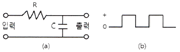
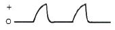
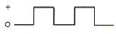
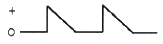
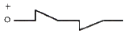
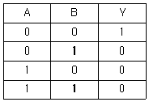
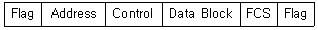
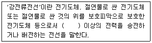

정보통신산업기사 (2014-03-09 기출문제)
1과목: 디지털전자회로
1. 다음 중 정류회로에서 리플 함유율을 감소시키는 방법으로 적합하지 않은 것은?
- 입력전원의 주파수를 낮게 한다.
- 반파정류회로보다 전파정류회로를 이용한다.
- 콘덴서입력형 평활회로에서 콘덴서 용량을 크게 한다.
- 초크입력형 평활회로에서 초크의 인덕턴스를 크게한다.
(정답률: 77%)

2. 직류 출력전압이 무부하일 때 300[V], 부하일 때 220[V]이면 정류기의 전압변동률은 약 몇[%] 인가?
- 10.25[%]
- 22.45[%]
- 36.36[%]
- 47.25[%]
(정답률: 82%)
3. 다음 중 전파정류회로의 특징이 아닌 것은?
- 정류 전류는 반파정류의 2배가 된다.
- 리플 주파수는 전원 주파수의 2배이다.
- 리플률이 반파정류회로보다 적다.
- 전원 전압의 직류 자화가 있다.
(정답률: 62%)
4. 다음 중 전계효과 트랜지스터(FET)에 관한 설명으로 틀린 것은?
- 입력저항이 높다.
- 접합형 입력저항은 MOS형보다 낮다.
- 저주파시 잡음이 적다.
- 소수캐리어에 의한 증폭작용을 한다.
(정답률: 71%)
5. 증폭도가 40[dB], 잡음지수가 6[dB]인 전치증폭기(pre-amp)를 증폭도 20[dB], 잡음지수 6[dB]인 주증폭기(Main Amp)에 연결할 때 종합 잡음지수는?
- 6.125[dB]
- 5.50[dB]
- 7.125[dB]
- 7.50[dB]
(정답률: 63%)
6. 소신호 증폭이나 트랜지스터의 활성역영에서만 동작하게 만든 증폭기는?
- A급 증폭기
- AB급 증폭기
- B급 증폭기
- C급 증폭기
(정답률: 77%)
7. 트랜지스터가 차단과 포화에서 동작될 때 무엇처럼 동작하는가?
- 스위치
- 선형증폭기
- 가변용량
- 발진기
(정답률: 75%)
8. 다음 중 발진기의 발진조건으로 틀린 것은?
- 궤환회로가 있으며 정궤환으로 동작한다.
- 궤환회로에 의한 위상천이는 0°이다.
- 궤환회로를 포함한 폐루프 이득이 1이다.
- 초기 시동시에는 폐루프 이득이 1보다 작다.
(정답률: 62%)
9. 외부로부터의 전기적인 신호가 없어도 회로 내에서 교류신호인 전기진동을 발생하는 회로는?
- 비교기
- 정류기
- 증폭기
- 발진기
(정답률: 79%)
10. 15[kHz]까지 전송할 수 있는 PCM시스템에서 요구되는 최소 표본화 주파수는?
- 10[kHz]
- 20[kHz]
- 30[kHz]
- 40[kHz]
(정답률: 80%)
11. Vc=20cosωct[V]의 반송파를 Vs=14cosωst[V]의 신호파로 진폭 변조했을 때 변조도(m)는 몇 [%]인가?
- 60[%]
- 70[%]
- 80[%]
- 90[%]
(정답률: 73%)
12. 다음 중 펄스신호에 대한 설명으로 틀린 것은?
- 상승기간이란 펄스의 진폭의 10[%]에서 90[%]까지 상승하는데 걸리는 시간을 말한다.
- 하강시간이란 펄스의 진폭이 90[%]에서 10[%]까지 하강하는데 걸리는 시간을 말한다.
- 펄스폭이란 펄스 파형이 상승 및 하강의 진폭의 66.7[%]가 되는 구간의 시간을 말한다.
- 오버슈트란 상승 파형에서 이상적 펄스파의 진폭보다 높은 부분을 말한다.
(정답률: 82%)
13. 그림(a)의 회로에 그림(b)와 같은 파형전압을 인가할 때 출력되는 파형으로 가장 적합한 것은? (단, RC ＞ T)





(정답률: 78%)
14. 16 진수(2AE)16을 8 진수로 변환하면?
- (257)8
- (1256)8
- (2557)8
- (4317)8
(정답률: 80%)
15. 2진코드 0011과 0100을 더하여 그레이코드(Gray Code)로 변환한 값은?
- 0100
- 0101
- 0111
- 1001
(정답률: 60%)
16. 진리표가 다음과 같을 때 해당되는 게이트는?

- AND
- OR
- NAND
- NOR
(정답률: 76%)
17. 다음 중 링 카운터에 대한 설명으로 틀린 것은?
- 입력 신호를 받을 때 마다 상태가 하나씩 다음으로 이동한 카운터이다.
- 각각의 상태마다 한 개의 플립플롭을 사용하는 카운터이다.
- 디코딩게이트를 사용하지 않고 디코딩 할 수 있다.
- 특별한 순차를 만들고자 할 때 사용한다.
(정답률: 62%)
18. 여러 개의 입력신호 가운데 하나를 선택하여 출력하는 동작을 하는 것은?
- 디멀티플렉서
- 멀티플렉서
- 레지스터
- 디코더
(정답률: 88%)
19. 레지스터(Register)의 기능으로 맞는 것은?
- 펄스 신호의 발생
- 데이터의 일시 저장
- 카운터 대용
- 클록 회로의 동기
(정답률: 90%)
20. 다음 중 카운터를 사용할 수 있는 응용 사례가 아닌 것은?
- Timer
- 기본 펄스 주파수의 체배
- 기본 펄스 주파수의 분주
- 펄스 진폭의 증폭
(정답률: 67%)
2과목: 정보통신기기
21. 정보 단말기의 기능 중 사람이 식별 가능한 데이터를 통신 장비가 처리 가능한 2진 신호로 변환하거나 그 역(逆)을 행하는 기능은?
- 신호 변환 기능
- 입ㆍ출력 기능
- 송ㆍ수신 제어 기능
- 에러 제어 기능
(정답률: 74%)
22. 정보통신시스템을 운용하기 위한 소프트웨어 파일관리 기능만을 열거한 것으로 적합하지 않는 것은?
- 매체공간 관리기능
- 기억소자 관리기능
- 에러제어 관리기능
- 엑세스 제어기능
(정답률: 66%)
23. 다음 중 통신 제어 장치(CCU)의 기능으로 옳지 않는 것은?
- 송ㆍ수신 제어
- 전송 에러 제어
- 시분할 다중 제어
- 입ㆍ출력 제어
(정답률: 64%)
24. 입력 장비가 3개인 동기식 TDM에서 각 프레임은 7개의 문자로 구성되어 있으며 프레임마다 동기를 위해서 2[bits]를 할당한다. 각 문자는 8[bits]이고, 각 입력단의 장비는 5,800[bps]로 보낸다고 할 때 다중화 된 후의 프레임 속도는?
- 100[frames/second]
- 200[frames/second]
- 300[frames/second]
- 400[frames/second]
(정답률: 86%)
25. 컴퓨터가 터미널에게 전송할 데이터가 있는지를 묻는 것을 무엇이라 하는가?
- 링크
- 폴링
- 셀렉션
- 어드레싱
(정답률: 88%)
26. 다음 중 DSU와 MODEM에 대한 설명으로 옳지 않은 것은?
- MODEM은 DTE와 아날로그 회선망을 접속한다.
- MODEM 간의 신호 전송형태는 디지털이다.
- DSU은 DTE와 디지털 회선망을 접속한다.
- DSU는 DTE로부터의 단극성 펄스를 북극성 펄스로 변환한다.
(정답률: 76%)
27. 초기의 전화망은 각각의 전화기가 모두 연결된 형태로 구성되었다. 이런 구성의 경우 전화기 n개를 연결하기 위하여 필요한 회선의 개수는?
- (n-1)/2
- n(n-1)/2
- (n+1)/2
- n(n+1)/2
(정답률: 91%)
28. 모뎀과 제한된 기능의 다중화기가 혼합된 형태의 변복조기로서 고속동기식 모뎀에 시분할 다중화 기기를 하나로 합친 것은?
- 멀티포트 모뎀
- 멀티포인트 모뎀
- 고속 모뎀
- 광대역 모뎀
(정답률: 73%)
29. 다음 중 공동 이용기의 종류에 해당되지 않는 것은?
- 선로 공동 이용기
- 모뎀 공동 이용기
- 포트 공동 이용기
- 디지털 서비스 유닛 공동 이용기
(정답률: 88%)
30. 전화기에서 사용하는 진동판의 구비조건으로 맞지 않는 것은?
- 자유진동이 적을 것
- 외력에 비례해서 되도록 큰 진폭으로 진동할 것
- 진동판의 평면 면적은 가급적 작을 것
- 온도 변화에 안정적으로 구동할 것
(정답률: 76%)
31. 전화 전송에 있어서 송화단의 전압과 수화단의 전압의 비가 100:1일 때 전송량[dB]은 얼마인가?
- 10[dB]
- 20[dB]
- 30[dB]
- 40[dB]
(정답률: 76%)
32. 교환기의 교환방식은 수동식과 자동식으로 구분된다. 다음 중 자동식 교환기가 아닌 것은?
- 기계식
- 전자교환식
- 광교환식
- 공전식
(정답률: 80%)
33. TV에 인터넷 접속 기능을 결합, 각종 앱(Application)을 설치해 웹서핑 및 VOD 시청, 소셜 네트워크 서비스(Social Network Service), 게임 등의 다양한 기능을 활용할 수 있는 기기는?
- HDTV
- OLED TV
- PDP TV
- SMART TV
(정답률: 92%)
34. 위성통신시스템에서 송신신호화 수신신호를 분리하는 장치로서 일종의 방향성 결합기 역할을 하는 것은?
- 다이플렉서
- 주파수 변환기
- 전력 증폭기
- 안테나
(정답률: 69%)
35. FM변조에서 주파수 변이가 일정한 한계를 넘지 않도록 자동적으로 제어하는 회로는?
- IDC 회로
- AVC 회로
- DAGC 회로
- AFC 회로
(정답률: 77%)
36. 다음 중 무선수신기 전단에 설치하는 고주파 증폭기의 목적이 아닌 것은?
- 신호대 잡음비의 개선
- 영상주파수에 의한 혼신 경감
- 부차적 전파의 방사 방지
- 고주파 신호의 대역폭 확대
(정답률: 68%)
37. 다음 중 WPAN(Wireless Personal Area Network) 방식이 아닌 것은?
- 블루투스
- UWB
- Zigbee
- 위성통신
(정답률: 79%)
38. 일반적으로 텔레비전 수상기와 전용키보드를 단말로 하고 이들 단말과 화상ㆍ음성 파일 장치를 가진 센터 사이를 광대역 전송로로 개별적으로 접속하여 이용자 요구에 따라 정보를 개별적으로 제공해 주는 시스템은?
- 텔리텍스트
- VRS(Video Response System)
- 화상전화시스템
- CRS(Computer Reservation System)
(정답률: 78%)
39. 다음 비디오텍스의 방식 중 포토 그래픽 방식을 기본으로 하여 도형을 패턴 정보로 부호화하여 보내는 방식은?
- CEPT 방식
- CAPTAIN 방식
- NAPLSS 방식
- TELEX 방식
(정답률: 69%)
40. 멀티미디어 압축방식 중 동영상 압축 기술에 대한 표준 규격은?
- TXT
- DOC
- JPEG
- MPEG
(정답률: 90%)
3과목: 정보전송개론
41. 다음 중 DPCM 송신기의 구성요소가 아닌 것은?
- 양자화기
- 부호화기
- 예측기
- 차동 증폭기
(정답률: 67%)
42. T1 전송시스템은 한 프레임 당 125[μs] 시간 동안 총 24채널을 다중화한다. 이 때 전송로 상의 전송속도는 얼마인가?
- 1.544[Mbps]
- 2.048[Mbps]
- 6.312[Mbps]
- 1.536[Mbps]
(정답률: 80%)
43. 반송 다중통신에서 초군(기초 초군)대역을 이용하는 경우 4[kHz]의 음성채널 몇 개를 동시에 전송할 수 있는가?
- 20개
- 30개
- 50개
- 60개
(정답률: 73%)
44. 다음 중 1비트인 2레벨 양자화를 사용하는 변조방식은?
- TDM
- DPCM
- PCM
- DM
(정답률: 78%)
45. 동축케이블의 전기적 특성 중 단위길이당 저항은 사용 주파수(f)와 어떤 관계인가?
- f와 비례
- f와 반비례
- √f와 비례
- √f와 반비례
(정답률: 65%)
46. 다음 중 UTP 케이블을 PC랜 단자와 연결하기 위한 커넥터 형태로 알맞은 것은?
- RJ-11
- RJ-23
- RJ-45
- RJ-56
(정답률: 86%)
47. 다음 무선통신 다원접속 방식 중 가입자 수용용량이 가장 큰 방식은? (단, 무선통신 조건은 동일하다고 가정한다.)
- FDMA
- TDMA
- CDMA
- WDMA
(정답률: 76%)
48. UTP케이블을 이용하여 공장 내 통신기기를 직접 연결하고자 한다. UPT 케이블의 손실이 5[dB]일 때 케이블의 대략적인 길이는? (단, UTP케이블 감쇄 손실은 2.5[dB/km]이다.)
- 0.5[km]
- 1[km]
- 1.5[km]
- 2[km]
(정답률: 83%)
49. 비동기식 전송 방식에서 Stop Bit의 역할을 무엇인가?
- 다음 문자를 수신할 수 있도록 준비 시간을 제공한다.
- 블록단위로 데이터를 일시에 전송하도록 한다.
- 헤딩의 시작을 표시한다.
- 텍스트의 시작을 표시한다.
(정답률: 82%)
50. 다음 중 혼합형 동기식 전송 방식에 대한 설명으로 옳지 않은 것은?
- 일반적으로 비동기식 전송보다 전송속도가 빠르다.
- Star bit와 Stop bit가 없다.
- 송신측과 수신측이 동기 상태에 있어야 한다.
- 문자와 문자 사이에 휴지시간이 있을 수 있다.
(정답률: 76%)
51. 디지털 변조에 의해 디지털 신호의 주파수대역을 옮겨서 전송하는 방식은?
- Broadband 전송
- Baseband 전송
- PCM 전송
- SSB 전송
(정답률: 75%)
52. 다음 중 통화로 신호 방식에 대한 설명으로 옳지 않은 것은?
- 통화로와 신호로가 개별회선에 중첩되는 방식이다.
- 각각의 선로에 신호를 함께 실어 보내는 방식이다.
- 회선개별신호방식(Per Channel Signaling)이라 부르기도 한다.방
- ITU-T No.7 식으로 표준화 되었다.
(정답률: 77%)
53. 패킷 공중 통신망에서 가입자와 망간의 인터페이스 프로토콜은?
- X.21
- X.23
- X.25
- X.27
(정답률: 76%)
54. ISO에서 제안한 LAN프로토콜 중 논리링크 제어 및 매체 엑세스 제어를 기술하고 있는 계층은 OSI의 어느 계층에 해당하는가?
- 물리계층
- 데이터링크계층
- 네트워크계층
- 전달계층
(정답률: 78%)
55. OSI 7계층 참조모델 중 제 4계층에 해당되는 것은?
- 응용계층
- 전송계층
- 표현계층
- 물리계층
(정답률: 85%)
56. 데이터를 전송하는 방법 중 한 장비에서 다른 한 장비로 1:1 메시지를 전송하는 방식은 무엇인가?
- 유니캐스트
- 브로드캐스트
- 멀티캐스트
- 애니캐스트
(정답률: 85%)
57. IP address 체계의 C class의 기본 서브넷 마스크에 해당하는 것은?
- 255.0.0.0
- 255.255.0.0
- 255.255.255.0
- 255.255.255.255
(정답률: 92%)
58. 다음 중 라우팅 테이블에 포함되어 있지 않은 정보는?
- 송신지 IP address
- 목적지 네트워크
- 다음 홉(hop) IP address
- 로컬 인터페이스
(정답률: 74%)
59. 다음 중 변복조기(MODEM)의 송신부에 동작순서로 맞는 것은?
- 단말장치 - 부호화기 - 변조기 – 대역제한필터 - 증폭기 - 변환기
- 단말장치 - 증폭기 - 변조기 –부호화기 - 대역제한필터 - 변환기
- 단말장치 - 부호화기 - 변조기 - 변환기 - 대역제한필터 - 증폭기
- 단말장치 - 대역제한필터 - 부호화기 – 증폭기 - 변환기 - 변조기
(정답률: 71%)
60. 다음 HDLC 구조에서 CRC기법에 의해 계산된 에러 검사용 정보를 나타내는 것은?

- Flag
- Address
- Control
- FCS
(정답률: 82%)
4과목: 전자계산기일반 및 정보설비기준
61. 컴퓨터에 있는 실제적인 컴퓨터로서 메모리나 I/O 장치로부터 읽거나 쓰는 명령 및 수학연산을 수행하는 것은?
- I/O포트
- CPU
- 메모리 슬롯
- PCI확장슬롯
(정답률: 80%)
62. 다음 중 마이크로컨트롤러의 기본적인 하드웨어 구조에 속하지 않는 것은?
- CPU Core
- Power
- Peripheral Interface
- Memory
(정답률: 67%)
63. 컴퓨터를 구성하고자 할 때, 메모리를 선택하는 요인 중 제일 우선순위가 낮은 것은?
- 접근 속도(Access Time)
- 기억 용량(Memory Capacity)
- 회로의 복잡성(Circuit Complexity)
- 연산처리속도
(정답률: 82%)
64. 2n개의 입력 중에서 n개의 선택에 의해 1개의 출력을 내보내는 것은?
- 레지스터
- 카운터
- 멀티플렉서
- 디코더
(정답률: 82%)
65. 다음 진수 표현 중에 제일 작은 수에 해당하는 것은?
- FF(16)
- 11111111(2)
- 254(10)
- 377(8)
(정답률: 77%)
66. 다음 중 ROM과 RAM의 차이점을 설명한 것으로 틀린 것은?
- RAM은 휘발성 메모리라고 한다.
- EPROM은 한 번 쓰면 지울 수 없다.
- RAM은 동적RAM과 정적RAM으로 나눌 수 있다.
- ROM의 종류에는 EPROM, EEPROM, PROM 등이 있다.
(정답률: 85%)
67. 컴퓨터에서 보수를 사용하는 이유로 가장 옳은 것은?
- 가산의 결과를 체크하기 위한 방법
- 감산에서 보수의 가산으로 감산의 역할을 대신하기 위한 방법
- 승산에서 연산의 수행을 제한하기 위한 방법
- 제산에서의 불필요한 과정을 제거시키기 위한 방법
(정답률: 79%)
68. 컴퓨터 사용자가 컴퓨터의 본체 및 각 주변 장치를 가장 능률적이고 경제적으로 사용할 수 있도록 하는 프로그램은?
- Operating System
- Macro
- Compiler
- Loader
(정답률: 83%)
69. CPU가 실행하여야 할 명령어의 수가 75개인 경우 명령어 구분을 위한 명령코드(Op-Code)는 최소한 몇 비트가 필요한가?
- 5비트
- 6비트
- 7비트
- 8비트
(정답률: 85%)
70. 다음 중 인터럽트가 필요한 경우가 아닌 것은?
- 명령어를 순서대로 처리하는 경우
- CPU가 입출력장치를 통하여 데이터를 압축하는 경우
- CPU에 타이밍기능을 부여하는 경우
- 시스템에 비상사태가 발생하는 경우
(정답률: 68%)
71. 미래창조과학부장관이 전기통신의 원활한 발전과 정보사회의 촉진을 위하여 수립하는 '정보통신기본계획'에 포함되는 사항이 아닌 것은?
- 전기통신의 질서유지에 관한 사항
- 전기통신의 이용효율화에 관한 사항
- 전기통신기술의 진흥에 관한 사항
- 국가정보화와 관련된 국제협력의 활성화에 관한 사항
(정답률: 76%)
72. 다수의 전기통신회선을 제어ㆍ접속하여 회선 상호 간의 방송통신을 가능하게 하는 교환기와 그 부대설비를 무엇이라 하는가?
- 교환설비
- 선로설비
- 전송설비
- 중계설비
(정답률: 61%)
73. 전기통신의 전송이 이루어지는 유형 또는 무형의 계통적 전기통신로를 무엇이라 하는가?
- 통신선
- 접지선
- 회선
- 전선
(정답률: 86%)
74. 백본(Back-bone), 방화벽(Fire Wall)과 같이 홈게이트웨이와 단지서버간의 통신 및 보안을 수행하는 장비는?
- 단지연결서버
- 단지네트워크장비
- 구내네트워크센터
- 월패드
(정답률: 65%)
75. 다음 중 별정통신사업에 대한 사항으로 옳지 않은 것은?
- 별정통신사업을 하려는 사람은 정보통신망에 의해 국토교통부장관에게 등록하여야 한다.
- 별정통신사업자가 되기 위해서는 재정 및 기술적 능력을 갖추어야 한다.
- 별정통신사업자는 등록한 날로부터 1년 이내에 사업을 시작해야 한다.
- 별정통신사업의 등록은 법인만 할 수 있다.
(정답률: 74%)
76. 공사업자의 감리 제한 규정을 위반하여 공사와 감리를 함께한 자에 대한 벌칙은?
- 3년 이하의 징역 또는 2천만원 이하의 벌금에 처한다.
- 1년 이하의 징역 또는 2천만원 이하의 벌금에 처한다.
- 500만원 이하의 벌금에 처한다.
- 300만원 이하의 벌금에 처한다.
(정답률: 72%)
77. 다음 문장의 괄호 안에 들어가 내용으로 가장 적합한 것은?

- 200볼트
- 300볼트
- 400볼트
- 500볼트
(정답률: 83%)
78. 다음 중 방송통신서비스를 안정적으로 제공하기 위하여 방송통신설비의 관리 규정을 정하여야 하는 방송통신사업자가 아닌 것은?
- 위성방송사업자
- 지상파방송사업자
- 종합유선방송사업자
- 중계유선방송사업자
(정답률: 78%)
79. 모든 이용자가 언제 어디서나 적절한 요금으로 제공받을 수 있는 기본적인 전기통신 역무를 무엇이라 하는가?
- 부가적 역무
- 특정적 역무
- 보편적 역무
- 공공적 역무
(정답률: 84%)
80. 기간통신사업자가 전기통신설비의 설치ㆍ보전을 위해 타인의 토지를 일시 사용할 수 있는 기간에 관한 규정으로 맞는 것은?
- 6개월을 초과할 수 없다.
- 1년을 초과할 수 없다.
- 1년 6개월을 초과할 수 없다.
- 2년을 초과할 수 없다.
(정답률: 75%)